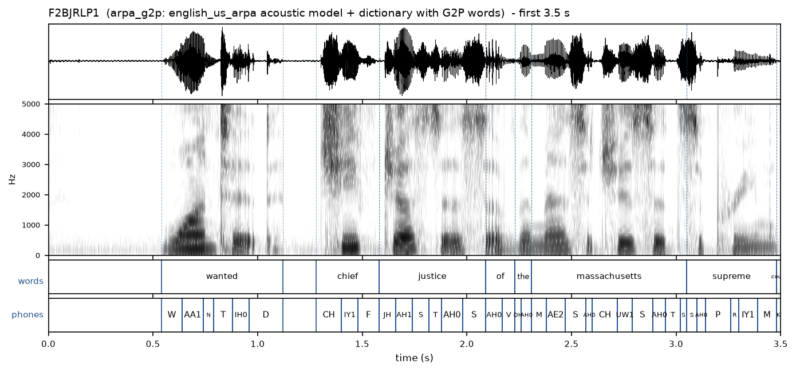
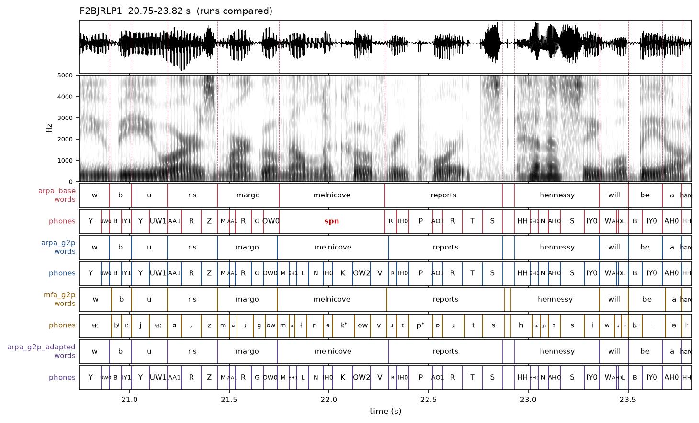
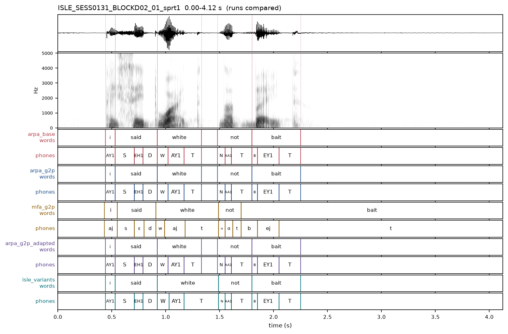

Summary. All six recordings were aligned at word and phone level in six MFA runs,
using two pretrained acoustic models (english_us_arpa, english_mfa), a MAP-adapted model, a
boundary fine-tuning pass and a custom dictionary built with MFA's G2P models. The custom dictionary
removes all five unaligned (spn) words. The ARPA model gives the cleanest alignments.
english_mfa agrees with it on the news recordings (92 % of word boundaries within 20 ms) but stretches
the final consonant over the trailing silence in all three learner recordings. Letting the aligner choose
between pronunciation variants shows that the non-native speaker said bad as "bet". Formant
and voicing measurements support this.
| Speaker | Files | Content | Duration | Words |
|---|---|---|---|---|
f2b | F2BJRLP1-3 | BU Radio News corpus, professional announcer reading news paragraphs | 25.3 / 28.6 / 30.7 s | 73 / 74 / 82 |
isle_sess0131 | ISLE_..._0[1-3] | ISLE corpus, non-native learner reading minimal-pair prompts | 4.1 / 3.9 / 4.5 s | 5 each |
MFA expects one folder per speaker holding a .wav and a .lab transcript for each utterance
(the speaker folders matter because MFA adapts to each speaker with fMLLR). Two fixes were needed first
(scripts/prepare_corpus.py):
F2BJRLP*.wav files have no RIFF header. They are NIST SPHERE files
(header NIST_1A, 16 kHz, 16-bit PCM) with a .wav name, which MFA cannot read. They are re-written as RIFF WAV
with libsndfile. The ISLE files were already 16 kHz WAV.| Raw text | Normalised (what the aligner sees) | Rule |
|---|---|---|
the S.J.C.'s current leader | the s j c's current leader | dotted abbreviation read letter by letter |
As WBUR's Margo Melnicove reports, | as w b u r's margo melnicove reports | all-caps acronym spelled out; punctuation dropped |
In nineteen seventy- six, | in nineteen seventy six | number split across a line break |
to de-politicize judicial | to de politicize judicial | hyphenated word split into dictionary words |
I SAID WHITE NOT BAIT | i said white not bait | lower-case only (acronym rule skipped for all-caps prompts) |
Both acoustic models are GMM-HMM triphone models with speaker adaptation, the standard MFA pipeline on Kaldi.
english_us_arpa uses the ARPAbet phone set of CMUdict (39 phones with vowel stress). english_mfa uses MFA's own
IPA-based phone set and was trained on more and more varied English. Words missing from a dictionary were found
with mfa g2p --dictionary_path, which tokenises the corpus exactly as the aligner does. Pronunciations
were generated with the matching G2P model and added to a copy of the stock dictionary with
mfa model add_words.
| Run | Acoustic model | Dictionary | What it tests |
|---|---|---|---|
arpa_base | english_us_arpa | english_us_arpa (stock) | baseline |
arpa_g2p | english_us_arpa | stock + G2P words | main run: custom dictionary |
arpa_g2p_finetune | english_us_arpa | stock + G2P words | --fine_tune boundary refinement |
arpa_g2p_adapted | english_us_arpa, MAP-adapted (mfa adapt) | stock + G2P words | adaptation to these speakers |
mfa_g2p | english_mfa | english_us_mfa + G2P words | second acoustic model / phone set |
isle_variants | english_us_arpa | canonical + learner variants | pronunciation check (Section 5) |
| Missing word | Missing from | G2P pronunciation chosen by the aligner (ARPA) |
|---|---|---|
| Dukakis (2×) | both | D UW0 K AA1 K IH0 S / D UW1 K AA1 K IH0 S (5 variants proposed; one picked per occurrence) |
| Melnicove | both | M EH1 L N IH0 K OW2 V |
| Maffy | both | M AE1 F IY0 |
| politicize | both | P AH0 L IH1 T IH0 S AY2 Z |
| judgeships, Margo | english_us_mfa only | dʒ ɐ dʒ ʃ ɪ p s, m ɑ ɹ ɡ ow |
Alignment command (the long news utterances need wider beams than MFA's defaults of 10/40):
mfa align corpus dictionaries/english_us_arpa_g2p.dict english_us_arpa outputs/arpa_g2p --beam 100 --retry_beam 400
Every run aligned all six files. With no hand-labelled reference available, quality is judged from MFA's diagnostics, from agreement between runs, and from red flags in the TextGrids.
| Run | spn words | Phones | Mean phone | Phones at 30 ms floor | Speech log-lik. | Word bounds ≤20 ms of arpa_g2p |
|---|---|---|---|---|---|---|
arpa_base | 5 | 1033 | 75.5 ms | 7.8 % | −47.7 | 99 % |
arpa_g2p | 0 | 1063 | 75.8 ms | 7.8 % | −47.7 | reference |
arpa_g2p_finetune | 0 | 1063 | 75.8 ms | 7.9 % | −47.7 | 100 % |
arpa_g2p_adapted | 0 | 1063 | 75.8 ms | 7.8 % | −47.7 | 100 % |
mfa_g2p | 0 | 1045 | 82.1 ms | 9.4 % | −44.8 | 92 % news / 63 % ISLE |
Speech log-likelihood is per frame, from MFA's alignment_analysis.csv. Values are not comparable across
acoustic models with different phone sets.


spn interval (red) with no phones. With G2P pronunciations, all runs segment it into
M EH1 L N IH0 K OW2 V, and the surrounding word boundaries stay within 20 ms. w b u r's is
aligned as the spelled-out acronym.
english_mfa (third
pair of tiers) leaves out the pause between white and not and stretches the final t of
bait to the end of the file (2.1 s). The ARPA runs place both silences where the spectrogram is empty.spn blobs. G2P fixes all of them without moving neighbouring boundaries (99 %
within 20 ms, maximum 20 ms).english_mfa. On all three ISLE files the last stop
(bait t 2.1 s, bed d 2.7 s) covers the final silence, and one pause is
lost. These files end with about 2 s of near-silence that this model absorbs into the preceding stop rather
than labelling it as silence. On the news recordings the two models agree (median word-boundary difference 10 ms).DH AH0 in 70 ms, of, to),
where the true segments are shorter than the model can represent. This is the main limit on phone-boundary
precision.Forced alignment assumes the speaker produced the canonical pronunciation, so a mispronounced word is still
aligned as if it were correct. The isle_variants run gives the aligner every prompt word with likely
learner variants, all equally probable: final devoicing (bad → B AE1 T), the /æ/–/ε/ merger
(bad → B EH1 D), and w→v. The aligner keeps the variant that fits the audio best:
| Prompt | Word | Canonical | Chosen | Reading |
|---|---|---|---|---|
| I said bad not bed | bad | B AE1 D | B EH1 T | "bet": vowel merger and final devoicing |
| I said new not no | new | N UW1 | N Y UW1 | British pronunciation (not an error) |
| all other 13 words | canonical variant chosen | |||
Acoustic measurements agree (scripts/formant_check.py, LPC formants in the middle of each vowel, speaker F0
≈ 108 Hz):
This is a simple form of pronunciation verification, done with the aligner alone. A proper version would score each phone with goodness of pronunciation (GOP) instead of picking from a hand-written variant list.
python run_pipeline.py --src <data folder> runs preparation, G2P, all six
alignments, the analysis and the figures (about 7 minutes on CPU).english_us_arpa and
english_us_mfa G2P models, plus a hand-written variant dictionary for the pronunciation check.english_us_arpa, english_mfa, and a model MAP-adapted to this corpus.outputs/<run>/<speaker>/. They open in Praat together with the WAVs in corpus/.